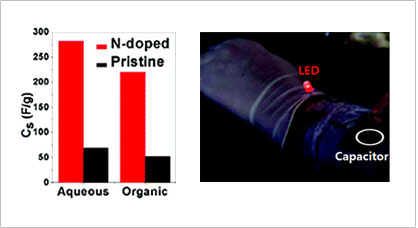

연구성과 10선
연구성과 10선
KAIST RESEARCH ACHIEVEMENTS
질소 첨가 그래핀을 이용한
초고용량 축전지 개발
EEWS대학원 최장욱
요약
전기자동차 실용화, 한국이 이끈다 현대사회는 전기를 빼놓고 생각하기 어렵다. 우리가 항상 사용하는 컴퓨터부터 거의 모든 가전제품, 자동차의 계기판 등 우리가 사용하는 거의 모든 곳에 전기가 사용된다. 가히 '전기 문명'이라고 할만한 현대사회의 숨은 공신이 바로 축전지다. 전기를 저장하여 언제 어디서나 쓸 수 있게 함으로써 장소 제약 없이 다양한 기기에 전기를 공급할 수 있기 때문이다. 특히 자동차에는 축전지가 매우 중요하다. 시동을 걸 때 엔진을 처음으로 움직이게 해 주는 것도 축전지고 전세계적으로 개발이 한창인 전기자동차의 핵심 부품도 축전지다. 전기자동차의 경우 그간 축전지의 용량 때문에 개발에 난항이 있었다. 충전 후 이동할 수 있는 거리를 충분히 확보하는 것이 실용화의 관건이었던 것이다. 최근 KAIST EEWS 대학원의 최장욱 교수 연구팀이 개발한 '질소 첨가 그래핀' 축전지는 용량 문제를 상당부분 해결하여 전기자동차 실용화를 앞당길 것으로 기대된다.
연구내용
흔히 쓰이는 기존 축전지는 소형 가전에 주로 사용된다. 아직 축전지의 용량이 충분치 않아 큰 기기를 움직이기에는 무리가 있기 때문이다. 하지만 화석 연료를 대체할 에너지 저장 장치에 관심이 쏠리면서 전지와 더불어 고용량 축전지의 필요성이 커지고 있다. 따라서 기존 축전지보다 용량이 높은 이른바 초고용량 축전지(Super Capacitor) 연구가 활발해 짐에 따라, 발전소 및 전기 자동차의 전원 보조 장치를 대체할 수 있는 가능성이 열렸다. 그러나 지금까지 개발된 초고성능 축전지는 에너지 저장 용량이나 효율면에서는 제법 발전했지만 실용성은 아직 50% 수준에 머물러있다. 더불어 이러한 전원 장치에서 가장 중요한 수명 문제를 해결한 사례가 드물다. 장치의 수명을 늘리려면 핵심 부품인 전극(에너지를 직접 저장하는 부분)의 내구성이 중요하며 많은 양의 에너지를 저장할 수 있어야 한다. 이를 모두 만족하는 물질이 요즘 꿈의 소재라 부르는 '그래핀'이다. 그래핀은 흑연을 원자 한 층의 두께로 벗겨낸 나노 물질로 여기에 간단한 처리를 하면 에너지 저장 특성을 개선할 수 있으며, 이를 이용하여 용량과 수명이 대폭 늘어난 축전지를 만들 수 있다.
두 마리 토끼를 잡아준
'질소 첨가 그래핀'
상용화가 가능한 고용량 축전지의 조건은 두 가지다. 용량과 수명. 하지만 이 두 가지 특성은 서로 상충되는 경우가 많다. 용량을 늘리려면 수명이 짧아지고 수명을 길게 하려면 용량이 제한되는 것이다. 한마디로 한 번에 두마리의 토끼를 쫓는 셈이다. 신소재인 그래핀은 반복해서 사용해도 성능저하가 일어나지 않아 긴 수명을 확보할 수 있지만 용량이 낮아 실용화가 어렵다. 그런데 그래핀에 탄소원자보다 전자 하나가 더 많은 질소를 첨가하면 에너지 저장 용량을 몇 배로 향상시킨 축전지를 만들 수 있다. '질소 첨가 그래핀'은 기존 '그래핀'보다 전하를 끌어당기는 힘이 훨씬 강해서 많은 양의 전하를 저장할 수 있으므로 축전지 용량을 대폭 늘릴 수 있다. 또한 질소를 첨가해도 그래핀이 원래 지닌 내구성과 기계적 특성은 그대로 유지되기 때문에 우수한 수명 특성이 그대로 유지된다. 실제로 최 교수 연구팀에서 구현한 축전지의 용량은 기존 '그래핀'을 사용한 고용량 축전지보다 6배가량 높은 280F/g을, 수명 특성은 산업화 가능한 반복 횟수인 10만 회를 훨씬 상회하는 23만회 이상을 달성했다. 이는 용량과 수명을 기준으로 세계에서 가장 높은 수준의 성능이라 볼 수 있다.
옷처럼 입을 수 있는 축전지?
신소재 그래핀은 탄소 원자가 한 층 두께로 배열된 나노 소재다. 그래핀은 휘거나 접어도 특성이 유지되기 때문에 '휘어지는 디스플레이', '접히는 메모리'등 모양을 자유로이 변화시킬 수 있는 부품을 만들 수 있다. 모양을 자유롭게 변화시켜서 휴대성을 극대화할 수 있으므로 IT업계에서는 그래핀의 가능성에 주목하고 많은 연구가 진행중이다. 그래핀으로 만든 축전지도 자유로이 휘고 접을 수 있기 때문에 몸에 착용할 수 있게 만들 수도 있다. 실제로 최교수 연구팀에서는 질소가 첨가된 그래핀을 사용하여 팔에 착용할 수 있는 축전지를 구현했다. 자유로이 휘어지는 축전지는 전기 효율과 휴대성을 극대화하여 차세대 IT기기에 필수적인 부품이 될 것이다. 한편, 최 교수 연구팀의 이번 성과는 기존 학계의 이론을 뒤집는 것이기도 하다. 그래핀은 소재로서 우수한 특성 때문에 질소 등 다른 원소를 그래핀에 넣는 연구도 여럿 있었다. 기존의 연구에서는 질소원자가 그래핀의 표면(basal-plane)에는 잘 섞여들지 않고 가장자리(edge)에만 첨가된다고 생각했다. 그러나 최 교수 연구팀이 사용한 플라즈마 기법은 그래핀의 가장자리뿐만 아니라 안쪽 표면에도 질소를 첨가할 수 있다. 이는 이온가속기를 이용한 성분 분석을 통해 실증되었으며 기존의 학계 통념을 뒤집는 성과이기 때문에 학술적으로도 큰 의미가 있다. 최 교수 연구팀은 이번 성과로 질소 첨가 그래핀을 이용하여 초고용량 축전지 구현을 입증한 동시에 학술적 성과도 달성하는, 두 마리 토끼를 잡은셈이다.

질소가 첨가된 그래핀과 일반 그래핀의 비교. 질소첨가 그래핀을 이용한 축전지는 일반 그래핀 축전지와 비교하여 용량이 무려 6배에 달한다. 그래핀을 활용한 축전지는 자유롭게 변형시킬 수 있어서 다양한 장소에 적용시킬 수 있다. 조만간 옷처럼 입을 수 있는 형태의 축전지도 나올 전망이다.
의미와 전망
이번에 개발된 초고용량 축전지의 성능은 세계적으로 최고 수준이라 할 수 있다. 전기자동차처럼 고용량 축전지가 필요한 분야에 당장 활용이 가능한 수준이다. 축전지는 화석연료를 대체할 수 있는 핵심 부품으로 손꼽히므로 친환경 산업 분야에 크게 기여할 것이다. 또한 질소를 첨가하는 공정이 매우 간단하며 산업적으로 생산할 때도 새로운 설비 구축 부담이 거의 없기 때문에 빠르게 상용화할 수 있다. 무엇보다 질소첨가에 따른 에너지 저장 특성 향상 분석 결과가 이례적이어서 학술적으로도 의미가 크다.
특허출원
ㆍ국내 특허 출원중
관련문헌
ㆍ미국의 유명 화학 학회지인 '나노 레터스' (Nano Letters)에 게재